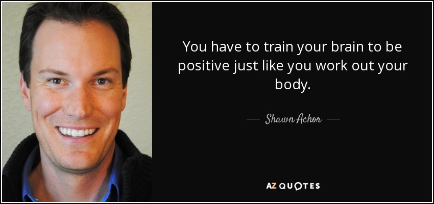

https://www.quora.com/Why-do-some-people-succeed-in-life-and-others-dont
When people talk about "success," they tend to associate it with words like: money, the corner office, the title of Director, fast cars and Armani suits.
But the truth is, you can associate anything you want to the word Success. Maybe you are successful when the project is complete. Maybe you are successful when your bank account has reached a certain number. Or maybe you are successful if you can go an entire day without feeling stressed. You set the metrics, nobody else.
To avoid spending your entire life falling down the rabbit hole and chasing the elusive definition of Success, be very clear at the onset of your definition of the word. Where people get into trouble and begin to feel unfulfilled with their work is when they move relentlessly towards a goal that has nothing to do with their definition of success. For example: you might work and work for that corner office, only to get it and realize that the corner office has very little to do with feeling successful. So what is the issue? Is your job or work to blame? Of course not. You just weren't clear on the internal measures that are essential for feeling successful--and you, more than likely, allowed someone else to set the goal for you.
At the end of the day, success and feeling successful comes down to the measures that you put into place, for yourself. The external will always be there. The nice car, the gold watch, the big flashy title at the big prestigious firm--those rewards will always exist, and can surely act as short-term motivation. But the long idea, the intrinsic motivation for your quest to greatness should come from a deeper sense of satisfaction, and that is something only you can define for yourself.
It's interesting how we all recognize these things, as soon as they are said to us. It sort of seems like "obvious advice." And yet right after the big conference, the motivational speech, the insightful blog post, people go right on with their lives, chasing the external rewards, feeling unfulfilled, letting someone else define success for them.
The focus should be on the journey.
It's the journey that provides real fulfillment. It's the journey where we learn the skills we ultimately value much more than the fruits of our own labor. It's the journey where we make friends with those fighting for the same causes, build memories, create things of value in our lives--and yet, so many miss the journey by staying tunnel-visioned on the end.
Forget the end. Don't let someone else define your own success. Success is not a thing, or a reward. It is a feeling. And it can be felt wherever and whenever you decide, on your own terms, in any moment you choose to feel "successful."
Questions
1. Brainstorming: What makes people feel successful? Please think of as many things associate with "success" as possible, make a list of them, and
1a. Pick the most important item of yours. Explain why it's so important.
1b. Pick the least important for you, and tell us why.
2. According to the writer's idea, every thing can be a success and everyone can be successful. Do you agree? Why or why not?
3. Have you ever seriously pursued "success" in your life? Did you make it? Do we need to pursue success as long as we are alive? If the answer is no, then when do we stop pursuing success?
Session Two

Please watch the TED talk of Shawn Achor, one the all time popular 20.
https://www.youtube.com/watch?v=fLJsdqxnZb0
Questions
1. How do you comfort a kid when he/she falls down on the ground and gets hurt badly? Try to practice a positive approach creatively.
2. Do we have positive thinking in Chinese culture? Please think of a phrase or proverb and make an example of it.
3. Do you agree with the speaker that "Pursuing success won't make you happier; be happy first, then you are more likely to be successful"? Why or why not? How about his method of training a positive mind? Does it work?